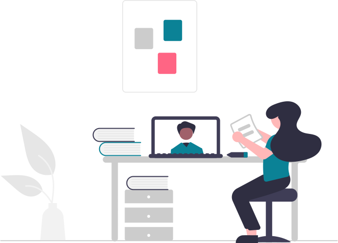

<ion-header class="ion-no-border">
  <ion-toolbar>
    <ion-title mode="ios">
      <span>Linguagens</span>
    </ion-title>
  </ion-toolbar>
</ion-header>

<ion-content>

  <figure></figure>
  <ion-item *ngFor="let language of languages" (click)=goToExercisePage(language.page)>
  
    <ion-thumbnail slot="start">
      
    </ion-thumbnail>
    <ion-label>{{language.name}}</ion-label>

    <ion-text >
      <ion-icon name="school-outline"></ion-icon>
      {{language.qtdAulas}} aulas
    </ion-text>
  
  </ion-item>

</ion-content>

<!-- Criação de um Rodapé caso necessário
<ion-footer class="ion-no-border">
  <ion-toolbar color="primary">
    <ion-title>Rodapé</ion-title>
  </ion-toolbar>
</ion-footer>
-->


